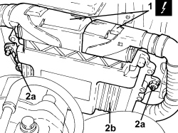
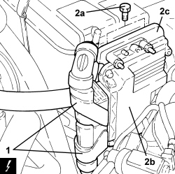

1060G80 DIESEL ELECTRONIC INJECTION CONTROL UNIT - .R
- Path
- Procedures > 10 ENGINE > 1060 DIESEL INJECTION SYSTEM > 1060G DIESEL INJECTION PRESSURE PUMP ELECTRONIC CONTROL > 1060G80 DIESEL ELECTRONIC INJECTION CONTROL UNIT - .R
- Kind
- repair procedure (removal / refitting; the operation number is the code)
- Applies to
- engines: 1.9 JTD 8V, 1.9 JTD 16V, 2.4 JTD 20V; all production periods
- Interactive page
- https://sloeber94.github.io/elrnDB/alfa/159/en/#/939010573
Applies to: engines: 1.9 JTD 8V, 1.9 JTD 16V; all production periods
 Removing
Removing
 Refitting
Refitting
Applies to: engines: 2.4 JTD 20V; all production periods
Removing
Refitting- Make sure that the ignition key is in the OFF position, then disconnect the battery terminal (-).
1. Disconnect the electrical connections from the diesel electronic injection system control unit.
Description | Connector | |
|---|---|---|
1 | Engine management control unit |
2. Undo the bolts (2a) and remove the diesel electronic injection system control unit (2b) complete with mounting bracket (2c).

Applies to: engines: 2.4 JTD 20V; all production periods
- Working at the bench, undo the fastenings and separate the diesel electronic injection system control unit from the mounting.
Applies to: engines: 2.4 JTD 20V; all production periods
Refitting
Removing- Place the diesel electronic injection system control unit in its housing on the mounting and secure it.
- Place the support complete with diesel electronic injection system control unit in its housing and secure it using the bolts.
- Connect the electrical connections to the diesel electronic injection system control unit.
- Connect the negative battery terminal.
Topics linked from this page (1)
Topics that link to this page (82)
- B010 ENGINE DOES NOT START (UNDER ANY CIRCUMSTANCES)
- B015 ENGINE DOES NOT START (STARTER MOTOR WORKING)
- D005 ENGINE DOES NOT PRODUCE BEST PERFORMANCE
- D012 ENGINE IDLING TOO LOW
- D014 ENGINE GOING OFF ON IDLING (THEN RESTARTING)
- D020 ENGINE CUTS OUT WHILST RUNNING (THEN NOT RESTARTING)
- D021 ENGINE CUTS OUT WHILST RUNNING (THEN RESTARTS)
- K030 MINIMUM ENGINE OIL PRESSURE WARNING LIGHT NOT WORKING
- K047 MINIMUM ENGINE OIL PRESSURE WARNING LIGHT ON CONSTANTLY
- K100 MIL WARNING LIGHT NOT WORKING (REMAINS OFF BEFORE STARTING)
- K101 MIL WARNING LIGHT STAYS ON (ENGINE STARTS)
- K123 WATER IN DIESEL FILTER WARNING LIGHT ON CONSTANTLY
- K124 HEATER PLUGS WARNING LIGHT ON CONSTANTLY
- K137 VEHICLE PROTECTION SYSTEM WARNING LIGHT ON CONSTANTLY
- Y002 P0087 - PRESSURE ON FLUTE
- Y003 P0088 - PRESSURE ON FLUTE
- Y069 P2010 - FLOW SHUTTER VALVE
- Y070 P2011 - FLOW SHUTTER VALVE
- Y097 U1706 - CAN (NCM - NFR)
- Y104 P0237 - TURBO PRESSURE
- Y105 P0238 - TURBO PRESSURE
- 1040AB SUBMERGED FUEL PUMP CHECK
- 1060EA DIESEL FUEL TEMPERATURE CHECK
- 1060EB FLOW MODULATOR SOLENOID OPERATION CHECK
- 1060GD ATMOSPHERIC PRESSURE CHECK
- 1060GG MEASURED AIR MASS CHECK
- 1060GH DIESEL FUEL PRESSURE CHECK
- 1060GI ENGINE SPEED CHECK
- 1060GJ ENGINE MANAGEMENT CONTROL UNIT SOFTWARE RELEASE CHECK
- 1060GL CHECK OPERATION OF MAIN ENGINE CONTROL UNIT RELAY
- 1060GM CHECK ENGINE CONTROL UNIT CONNECTIONS
- 1060GN CHECK ENGINE CONTROL UNIT CONNECTIONS
- 1060GO INTEGRATED THROTTLE BODY OPERATION CHECK
- 1060GP CHECK ENGINE CONTROL UNIT CONNECTIONS
- 1060GQ CHECK OPERATION OF SENSOR DETECTING PRESENCE OF WATER IN DIESEL FILTER
- 1060GR CHECK OPERATION OF FUEL PRESSURE SENSOR ON RAIL
- 1060GS DEBIMETER OPERATION CHECK
- 1060GK CHECK CONTROL UNIT SOFTWARE AND HARDWARE
- 1060GF SUPERCHARGING PRESSURE CHECK
- 1060OE CHECK ON OPERATION OF COOLANT TEMPERATURE SENSOR
- 1060FA INJECTOR OPERATION CHECK
- 1060FA INJECTOR OPERATION CHECK
- 1060FB INJECTOR CIRCUIT OPERATION CHECK
- 1060FB INJECTOR CIRCUIT OPERATION CHECK
- 1064BB CHECK ON OPERATION OF SUPERCHARGING PRESSURE SOLENOID VALVE (PIERBURG)
- 1064BD SUPERCHARGING TEMPERATURE CHECK
- 1064BE CHECK TURBO VALVE PROTECTION FUSE
- 1068AC ACCELERATOR PEDAL CHECKS
- 1080BF CHECK DIFFERENTIAL PRESSURE SENSOR OPERATION
- 1080BG PRECONVERTER OUTPUT TEMPERATURE SENSOR OPERATION CHECK
- 1080BH DPF INPUT TEMPERATURE SENSOR OPERATION CHECK
- 1080CB E.G.R. SOLENOID FUNCTIONAL TEST
- 3340AB SPEED SIGNAL CHECK
- 5040BD LINEAR SENSOR OPERATION CHECK
- 5505AE ENGINE MANAGEMENT CONTROL UNIT POWER SUPPLY FUSE CIRCUIT CHECK
- 5510CG CHECK TIMING SENSOR OPERATION
- 5520BA ENGINE IGNITION SYSTEM CHECK
- 5520CA GLOW PLUGS FUNCTIONAL TEST
- 5530BB BATTERY VOLTAGE CHECK
- 0510A10 CYLINDER COMPRESSION - CHECK FOR LOOSE SPARK PLUGS OR INJECTORS
- E1050 CAN CONNECTION LINES - WIRING DIAGRAM
- E1050 CAN CONNECTION LINES - COMPONENT LOCATION
- E5020 ENGINE COOLING - WIRING DIAGRAM
- E5020 ENGINE COOLING - COMPONENT LOCATION
- E5020 ENGINE COOLING - WIRING DIAGRAM
- E5020 ENGINE COOLING - COMPONENT LOCATION
- E5050 DIESEL ENGINE ELECTRONIC MANAGEMENT WIRING DIAGRAM
- E5050 DIESEL ENGINE ELECTRONIC MANAGEMENT COMPONENT LOCATION
- E5050 DIESEL ENGINE ELECTRONIC MANAGEMENT WIRING DIAGRAM
- E5050 DIESEL ENGINE ELECTRONIC MANAGEMENT COMPONENT LOCATION
- E5050 DIESEL ENGINE ELECTRONIC MANAGEMENT WIRING DIAGRAM
- E5050 DIESEL ENGINE ELECTRONIC MANAGEMENT COMPONENT LOCATION
- E5060 CRUISE CONTROL - WIRING DIAGRAM
- E5060 CRUISE CONTROL - COMPONENT LOCATION
- E5070 PARTICLE FILTER SYSTEM - WIRING DIAGRAM
- E5070 PARTICLE FILTER SYSTEM - COMPONENT LOCATION
- E6021 COMPRESSOR ENGAGEMENT - WIRING DIAGRAM
- E6021 COMPRESSOR ENGAGEMENT - COMPONENT LOCATION
- E7010 CODE - WIRING DIAGRAM
- E7010 CODE - COMPONENT LOCATION
- E8010 MULTIPLE DIAGNOSTIC CONNECTOR - WIRING DIAGRAM
- E8010 MULTIPLE DIAGNOSTIC CONNECTOR - COMPONENT LOCATION